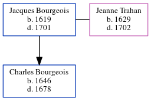

Jacques Jacob Bourgeois 1619 - 1701
[ Home ] | [ Calendar ] | [ Surnames Index ] | [ Census Index ] | [ Family History ]A surgeon and founding pioneer, Jacques Bourgeois, the 10 times great-grandfather of Michele Copp (née Phillips), was born in France in 16191,2 and married Jeanne Trahan (with whom he had 1 child, Charles) in Port Royal, Acadia, Nova Scotia, Canada in 1643.he arrived in Port Royal, Acadia, Nova Scotia, Canada in 1641 (arrived on ship Le Francois).
He died in 1701 in Port Royal, , New Brunswick, Canada3.
Children
- Charles was born in 1646
Citations
- Family Data Collection - Births Online publication - Provo, UT, USA: The Generations Network, Inc., 2001.
- U.S. and International Marriage Records, 1560-1900 Online publication - Provo, UT, USA: The Generations Network, Inc., 2004.Original data - This unique collection of records was extracted from a variety of sources including family group sheets and electronic databases. Originally, the information was deriv
- Family Data Collection - Deaths Online publication - Provo, UT, USA: The Generations Network, Inc., 2001.
Family Tree
Generated by ged2site. Last updated on Jun 6, 2024